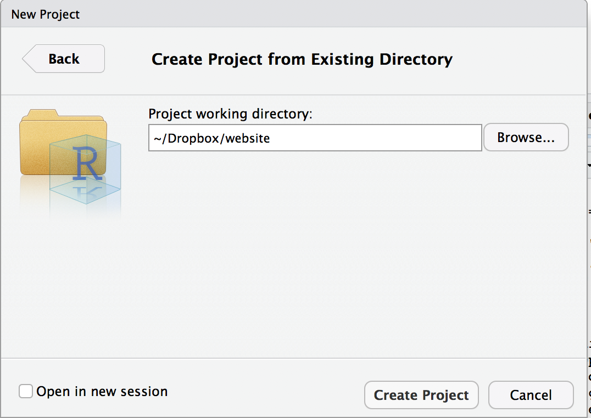

Requirements
I strongly recommend R, Rstudio and Github. I choose the Github pages to host the website and am using blogdown based on Hugo. See Alison Presmanes Hill’s post for detailed introduction to creating a blogdown site. Or Amber Thomas’ post. I stole most of the material for this post from their posts, mostly to teach myself how to create a blog and provide me with a template for future blogs.
Additional Resources
Before you start, I recommend reading the following:
blogdown: Creating Websites with R Markdown by Yihui Xie and Amber Thomas- Making a Website Using
blogdown, Hugo, and GitHub pages also by Amber Thomas - Getting Started with
blogdownby M. Edward (Ed) Borasky
In RStudio
- Install
blogdownfrom your RStudio console. You need to installdevtoolsfirst if you don’t have it already installed. You could also install hugo from blogdown as following if you skipped the previous step.
if (!requireNamespace("devtools")) install.packages("devtools")
devtools::install_github("rstudio/blogdown")
blogdown::install_hugo()
- Use the top menu buttons in RStudio to select
File -> New Project -> Existing Directory, then browse to the directory on your computer where your website directory should be is and click on the Create Project button. This is equivalent to issuing ablogdown::new_site(theme="XXXX")command in the Rstudio prompt

Now you should be “in” your project in RStudio.
You should see the following sub directories in your website folder. Some of following may not be present due to your system configuration.

You do most of the edits and changes in the content folder. Running hugo command builds the website in the public folder. This is the folder that we will upload to the github account to create a website.
If you want to see the preview of the site, look to the viewer pane of Rstudio or use hugo server -D in the terminal.
- Changing themes and other configurations are easy or complicated depending on your theme and your skill level. I recommend not tinkering with the defaults to start with and then gradually changing bits and pieces of the website.
Creating a blog post in Rmarkdown
Relevant reading:
blogdownbook chapter on RStudio IDEblogdownbook chapter on output formats: on .md versus .Rmd posts- Additional detail from Amber on adding a blog post
Bottom line:
Use the New Post addin. But, you need the console to do this, so you have to stop blogdown::serve_site by clicking on the red Stop button first. The Addin is a Shiny interface that runs this code in your console: blogdown:::new_post_addin(). So, your console needs to be unblocked for it to run. You also need to be “in” your RStudio project or it won’t work.
Draft posts
Relevant reading:
Whether you do a markdown or R Markdown post (see below), you should know that in the YAML front matter of your new file, you can add draft: TRUE and you will be able to preview your post using blogdown::serve_site(), but conveniently your post will not show up on your deployed site until you set it to false. Because this is a function built into Hugo, all posts (draft or not) will still end up in your GitHub repo though.
New markdown posts
Pick one of 2 methods:
- Use the New Post addin and with the radio button at the bottom select Format: Markdown (recommended)
- Use the console to author a new
.mdpost:
blogdown::new_post()
blogdown::new_post(ext = getOption("blogdown.ext", ".md"))
Here are the ?new_post arguments:
new_post(title, kind = "", open = interactive(), author = getOption("blogdown.author"),
categories = NULL, tags = NULL, date = Sys.Date(), file = NULL, slug = NULL,
title_case = getOption("blogdown.title_case"), subdir = getOption("blogdown.subdir",
"post"), ext = getOption("blogdown.ext", ".md"))
blogdown::new_post(rmd = FALSE) but that is no longer true.
New RMarkdown posts
Again, you have your choice of one of 2 methods:
- Use the New Post addin and with the radio button at the bottom select Format: RMarkdown (recommended)
- Use the console to author a new
.Rmdpost:
blogdown::new_post("Title", ext = getOption("blogdown.ext", ".Rmd"))
After you edit your .Rmd post, in addition to saving the changes in your .Rmd file, you must use blogdown::serve_site- this is how the output html file needs to be generated.
.Rmd posts- use blogdown::serve_site instead. If you happen to hit the knit button, just Serve Site again to rewrite the .html file.
Ultimately, your YAML front matter looks something like this; note that some but not all features of rmarkdown::html_document are supported in blogdown:
---
title: "My Awesome Post"
author: "John Doe"
date: "2017-02-14"
output:
blogdown::html_page:
toc: true
toc_depth: 1
number_sections: true
fig_width: 6
---
.html file is properly output.
Adding images to a post
If you want to include an image that is not a figure created from an R chunk, the recommended method is to:
- Add the image to your
/static/img/folder, then - Reference the image using the relative file path as follows:

GitHub Account
First you need to create a Github account. This will also be the website name.
- Create a new repository called
yourusername.github.io.and make it public.
- Using terminal go to
website\publicusingcdand issue the following commands
git init
git remote add origin https://github.com/yourusername/yourusername.github.git.io
git add .
git commit -m "Initial Commit"
git push -u origin master
- The first two commands will only need to be issued once. The last three commands suitably modified will update
yourusername.github.io
That is all there is to it. If you want to add more posts, keep adding a new post page in R markdown, create a static html page and add to the github repo to update your website.
Happy blogging.